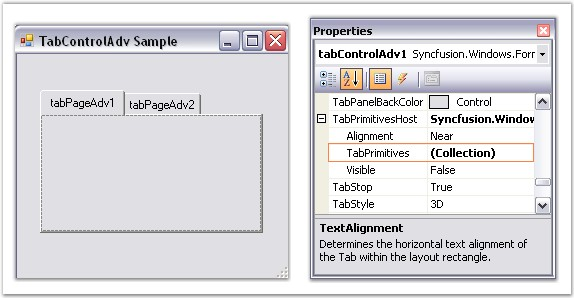
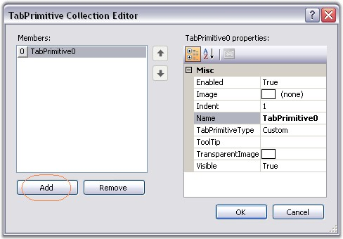
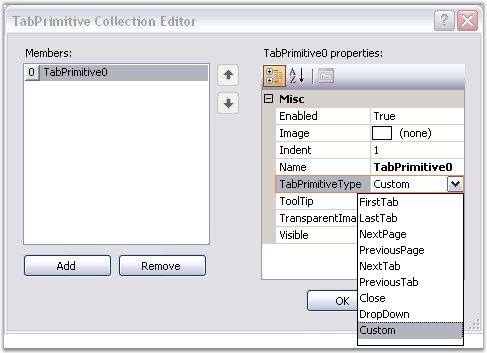

Creating TabPrimitives Through Designer
To create Tab Primitives through designer, follow the steps given below.
1. After adding a TabControlAdv with a set of TabPages in it, select the TabPrimitivesHost.TabPrimitives property in the Properties window.

Figure 1048: TabPrimitives property in the Properties Grid
2. A TabPrimitives Collection Editor will be opened. Click the Add option in the Editor to add a TabPrimitive.

Figure 1049: TabPrimitive Collection Editor
3. Set the TabPrimitiveType as required and click Ok.

Figure 1050: Setting the TabPrimitive Type
Code snippets to add TabPrimitives programmatically
|
[C#]
//Adds a TabPrimitive of type DropDown. this.tabControlAdv4.TabPrimitivesHost.TabPrimitives.Add(new Syncfusion.Windows.Forms.Tools.TabPrimitive(Syncfusion.Windows.Forms.Tools.TabPrimitiveType.DropDown, null, System.Drawing.Color.Empty, true, 1, "TabPrimitive0"));
//Adds a TabPrimitive of type Close. this.tabControlAdv1.TabPrimitivesHost.TabPrimitives.Add(new Syncfusion.Windows.Forms.Tools.TabPrimitive(Syncfusion.Windows.Forms.Tools.TabPrimitiveType.Close, null, System.Drawing.Color.Empty, true, 1, "TabPrimitive1"));
//Similarly other TabPrimitive types are added.
//Makes the TabPrimitive visible in the control. this.tabControlAdv1.TabPrimitivesHost.Visible = true; |
|
[VB.NET]
'Adds a TabPrimitive of type DropDown. Me.tabControlAdv4.TabPrimitivesHost.TabPrimitives.Add(New Syncfusion.Windows.Forms.Tools.TabPrimitive(Syncfusion.Windows.Forms.Tools.TabPrimitiveType.DropDown, Nothing, System.Drawing.Color.Empty, True, 1, "TabPrimitive0"))
'Adds a TabPrimitive of type Close. Me.tabControlAdv1.TabPrimitivesHost.TabPrimitives.Add(New Syncfusion.Windows.Forms.Tools.TabPrimitive(Syncfusion.Windows.Forms.Tools.TabPrimitiveType.Close, Nothing, System.Drawing.Color.Empty, True, 1, "TabPrimitive1"))
'Similarly other TabPrimitive types are added.
'Makes the TabPrimitive visible in the control. Private Me.tabControlAdv1.TabPrimitivesHost.Visible = True |
 Note: After adding TabPrimitives, set the
TabPrimitiveHost.Visible property to True. Now the TabPrimitives added will be
visible in the TabControlAdv.
Note: After adding TabPrimitives, set the
TabPrimitiveHost.Visible property to True. Now the TabPrimitives added will be
visible in the TabControlAdv.